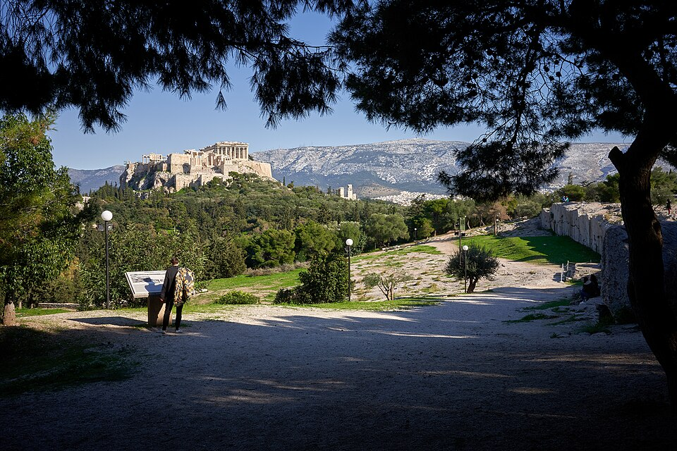
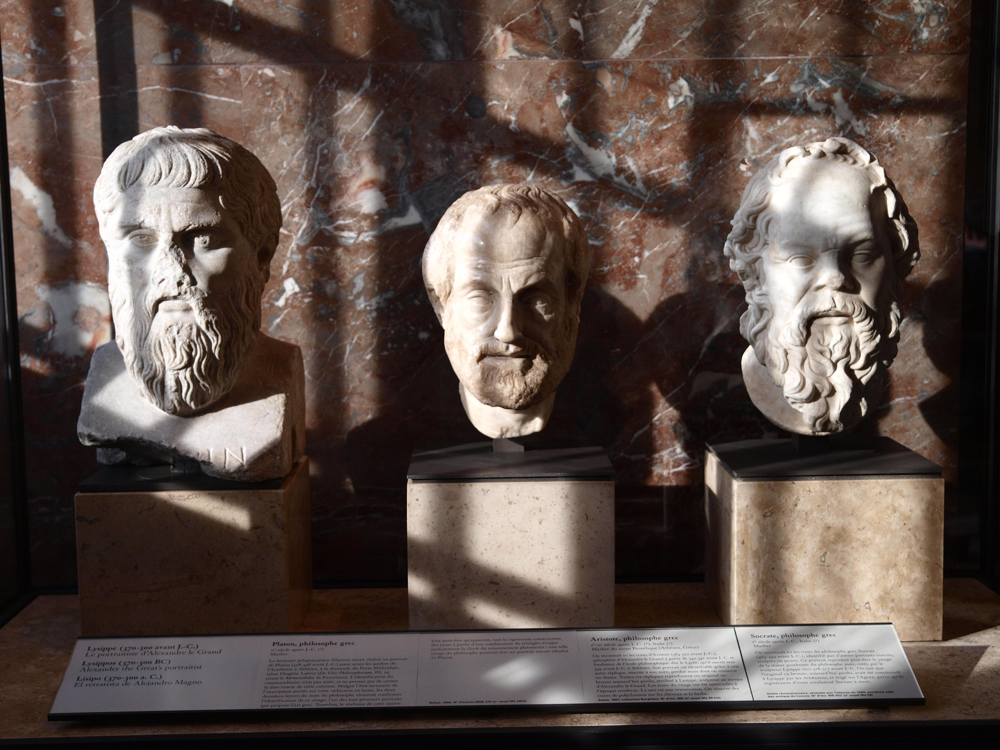
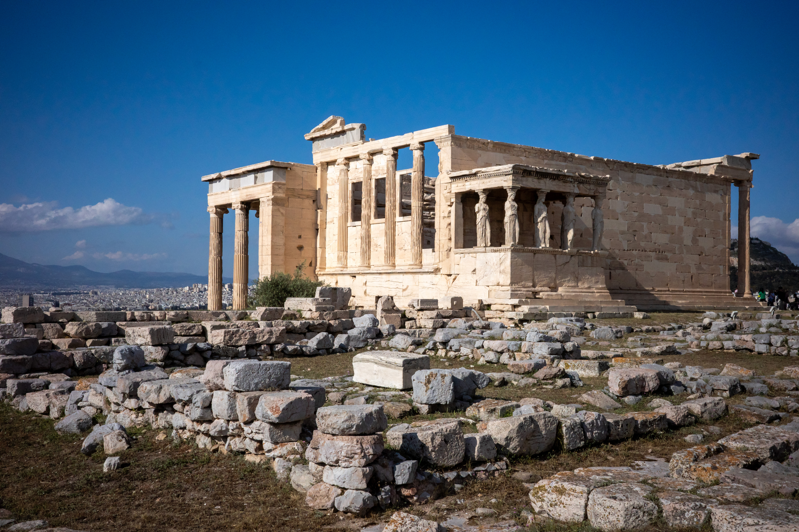

Em Atenas surgiu uma das primeiras formas de democracia, permitindo que os cidadãos participassem das decisões políticas da cidade.

Sócrates, Platão e Aristóteles foram importantes pensadores gregos que contribuíram para o desenvolvimento da filosofia e do conhecimento.

Os templos e monumentos gregos se destacavam pelas colunas e construções que influenciaram a arquitetura de diferentes épocas.

VOLTA AO MUNDO